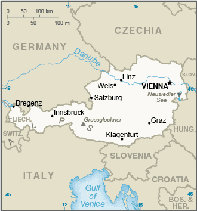
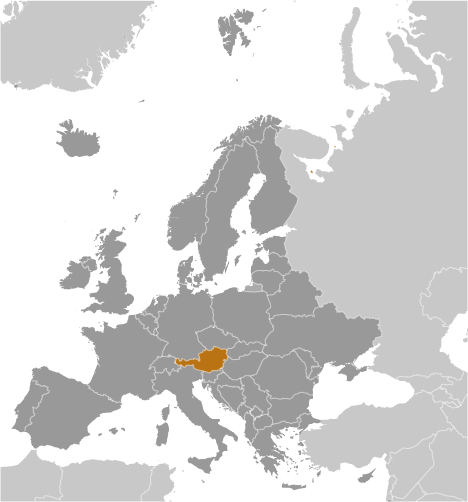
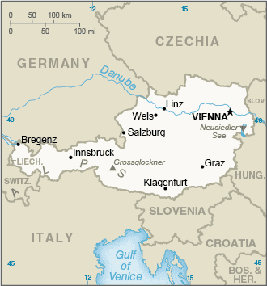
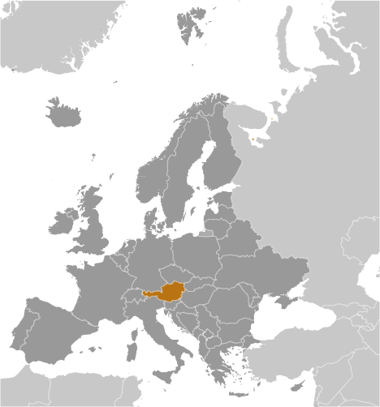

Location
Central Europe, north of Italy and Slovenia
Geographic coordinates
47 20 N, 13 20 E
Map references
Europe
Area
- total: 83,871 sq km
- land: 82,445 sq km
- water: 1,426 sq km
- country comparison to the world: 115
Area comparative
about the size of South Carolina; slightly more than two-thirds the size of Pennsylvania
Land boundaries
- total: 2,524 km
- border countries (8): Czech Republic 402 km, Germany 801 km, Hungary 321 km, Italy
404 km, Liechtenstein 34 km, Slovakia 105 km, Slovenia 299 km, Switzerland 158 km
Coastline
0 km (landlocked)
Maritime claims
none (landlocked)
Climate
temperate; continental, cloudy; cold winters with frequent rain and some snow in lowlands
and snow in mountains; moderate summers with occasional showers
Terrain
mostly mountains (Alps) in the west and south; mostly flat or gently sloping along
the eastern and northern margins
Elevation
- mean elevation: 910 m
- lowest point: Neusiedler See 115 m
- highest point: Grossglockner 3,798 m
Natural resources
oil, coal, lignite, timber, iron ore, copper, zinc, antimony, magnesite, tungsten,
graphite, salt, hydropower
Land use
- agricultural land: 38.4% (2016 est.)
- arable land: 16.5% (2016 est.) / permanent crops: 0.8% (2016 est.) / permanent pasture:
21.1% (2016 est.)
- forest: 47.2% (2016 est.)
- other: 14.4% (2016 est.)
Irrigated land
1,170 sq km (2012)
Population distribution
the northern and eastern portions of the country are more densely populated; nearly
two-thirds of the populace lives in urban areas
Natural hazards
landslides; avalanches; earthquakes
Environment - current issues
some forest degradation caused by air and soil pollution; soil pollution results from
the use of agricultural chemicals; air pollution results from emissions by coal- and
oil-fired power stations and industrial plants and from trucks transiting Austria
between northern and southern Europe; water pollution; the Danube, as well as some
of Austria’s other rivers and lakes, are threatened by pollution
Environment - international agreements
- party to: Air Pollution, Air Pollution-Nitrogen Oxides, Air Pollution-Persistent Organic
Pollutants, Air Pollution-Sulfur 85, Air Pollution-Sulphur 94, Air Pollution-Volatile
Organic Compounds, Antarctic Treaty, Biodiversity, Climate Change, Climate Change-Kyoto
Protocol, Desertification, Endangered Species, Environmental Modification, Hazardous
Wastes, Law of the Sea, Ozone Layer Protection, Ship Pollution, Tropical Timber 83,
Tropical Timber 94, Wetlands, Whaling
- signed, but not ratified: none of the selected agreements
Geography - note
landlocked; strategic location at the crossroads of central Europe with many easily
traversable Alpine passes and valleys; major river is the Danube; population is concentrated
on eastern lowlands because of steep slopes, poor soils, and low temperatures elsewhere
 
